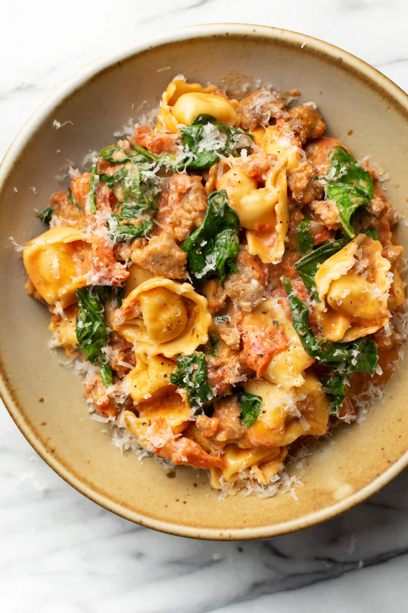

Italian Sausage Tortellini

Description
I found this recipe on on some cheap quick meal recipe subreddit and
I loved it. I usually cook it with some frozen vegetables and it's pretty good.
Ingredients
- Italian Sausage
- Jar of Marinara or Tomato Sauce
- Your choice tortellini (I prefer cheese)
Steps
- Cook the sausage for around 10 minutes in a pan on medium heat with a tiny amount of water
- Take the sausage out and cut it up into pieces. Start boiling a pot of water simultaneously.
- Pour the tomato sauce and the cut up sausage back into the pan and bring to low. Add pasta to boiling water
- Once pasta is done, drain and put into the pan. Voila!